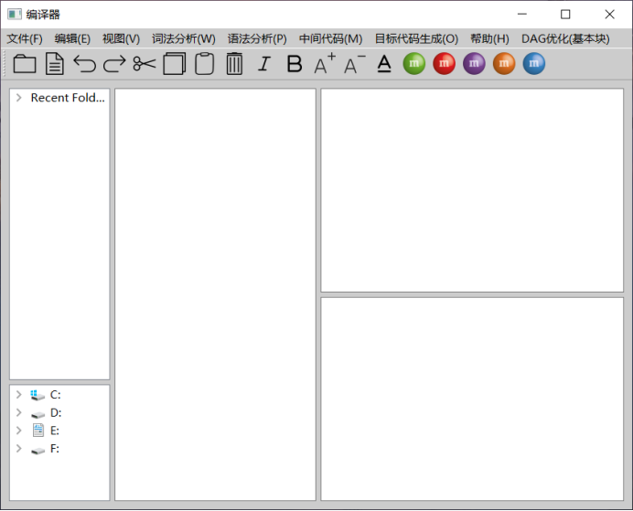

1. 介绍
此编译器作为教学课程设计辅助使用，可以进行编译器各个阶段的演示，并实现了相关阶段的算法，各个阶段都设计了部分测试案例。
编译器主界面如图1所示；

图1 编译器主界面
主界面中最左侧的两个文本框分别显示了最近访问过的文件夹路径和本地电脑系统下所有的文件夹，中间的文本框显示要处理的源程序的内容，右侧的两个文本框分别显示编译各个阶段的分析结果。各个文本框可以通过鼠标拖动其大小，并在其中设置了滚动条。
在主界面的工具栏中，从左到右依次提供了打开文件，保存文件，撤销、恢复、剪切，复制、粘贴、删除、斜体、加粗、增大字号、减小字号、添加下划线、改变字体颜色等功能。
本系统共实现两套编译器，分别为递归下降编译器、LR编译器，此外，实现了LL1预测语法分析、算符优先语法分析、LR语法分析、划分基本块、DAG优化、REG正则表达式转化算法，可在文档中查看对应模块。
2. 文法
编译器共两套文法：递归下降文法、LR文法，分别用于实现递归下降编译器、LR编译器的设计。
1.递归下降文法（文法（详细）.txt）
程序 -> 声明语句 main ( ) 复合语句 函数块
声明语句 -> const 常量类型 常量声明表 声明语句 | 变量类型 标识符 p3 声明语句 | void 标识符 ( 函数声明形参列表 ) ; 声明语句 | r
复合语句 -> { 语句表 } | 语句
函数块 -> 函数定义 函数块 | r
函数定义 -> 函数类型 标识符 ( 函数定义形参列表 ) 复合语句
函数类型 -> int | char | float | void
标识符 -> 700
函数定义形参列表 -> 函数定义形参 | r
函数定义形参 -> 变量类型 标识符 m1
m1 -> , 函数定义形参 | r
变量类型 -> int | char | float | string | double | bool
语句 -> 声明语句 | 执行语句
执行语句 -> 数据处理语句 | 控制语句 | 复合语句
值声明 -> 常量声明 | 变量声明
函数声明 -> 函数类型 标识符 ( 函数声明形参列表 ) ;
常量声明 -> const 常量类型 常量声明表
常量类型 -> int | char | float | string | double | bool
变量声明 -> 变量类型 变量声明表
常量声明表 -> 标识符 = 常量 m2
m2 -> ; | , 常量声明表
常量 -> 400 | 500 | 600 | 800 | 850 | 900 | 135
变量声明表 -> 单变量声明 m3
m3 -> ; | , 变量声明表
单变量声明 -> 标识符 n4
n4 -> = 表达式 | r
表达式 -> 标识符 p2 | ( 算术表达式 ) m7 n3 q1 q2 | 常量 m7 n3 q1 q2 | ! 布尔表达式 m6 m5 | - n7 m7 n3
q1 -> 关系运算符 算术表达式 | r
q2 -> m6 m5 | r
p1 -> ( 实参列表 ) | r
p2 -> p1 m7 n3 q1 q2 | = 表达式
p3 -> n4 m3 | ( 函数声明形参列表 ) ;
p4 -> = 表达式 ; | ( 实参列表 ) ;
函数声明形参列表 -> 函数声明形参 | r
函数声明形参 -> 变量类型 n5
n5 -> , 函数声明形参 | r
数据处理语句 -> 标识符 p4
控制语句 -> if语句 | for语句 | while语句 | dowhile语句 | return语句 | break语句 | continue语句
赋值语句 -> 赋值表达式 ;
函数调用语句 -> 函数调用 ;
赋值表达式 -> 标识符 = 表达式
函数调用 -> 标识符 ( 实参列表 )
语句表 -> 语句 n6
n6 -> 语句表 | r
关系表达式 -> 算术表达式 关系运算符 算术表达式
算术表达式 -> 项 n3
n3 -> + 项 n3 | - 项 n3 | r
关系运算符 -> > m4 | < m4 | >= | <= | == | !=
m4 -> = | r
布尔表达式 -> 布尔项 m5
m5 -> or 布尔项 m5 | r
布尔项 -> 布尔因子 m6
m6 -> && 布尔因子 m6 | r
布尔因子 -> 算术表达式 q1 | ! 布尔表达式
项 -> 因子 m7
m7 -> * 因子 m7 | / 因子 m7 | % 因子 m7 | r
因子 -> n7 | - n7
n7 -> ( 算术表达式 ) | 常量 | 标识符 p1
常量 -> 数值型常量 | 字符型常量 | G7
数值型常量 -> 400 | 800 | 850
字符型常量 -> 500 | 600
G7 -> 137 | 138
实参列表 -> 实参 | r
实参 -> 表达式 m8
m8 -> , 实参 | r
if语句 -> if ( 表达式 ) 复合语句 m9
m9 -> else 复合语句 | r
for语句 -> for ( 表达式 ; 表达式 ; 表达式 ) 复合语句
while语句 -> while ( 表达式 ) 复合语句
dowhile语句 -> do 复合语句 while ( 表达式 ) ;
return语句 -> return n1
n1 -> 表达式 ; | ;
break语句 -> break ;
continue语句 -> continue ;
2.LR文法（文法修改.txt、文法修改1.txt）
程序:声明语句列表 main ( ) 复合语句 函数块 | main ( ) 复合语句 函数块
声明语句列表:声明语句 | 声明语句 声明语句列表
函数块:函数定义 函数块 | ε
表达式:算术表达式 | 关系表达式 | 布尔表达式 | 赋值表达式
算术表达式: 加减表达式
加减表达式: 项 | 加减表达式 + 项 | 加减表达式 - 项 | - 项
项: 因子 | 项 * 因子 | 项 / 因子 | 项 % 因子
因子: 常量 | 变量 | ( 算术表达式 ) | 函数调用
常量:数字常量 | 字符型常量
数字常量:integer | float
字符型常量:character
变量:identifier | 数组
函数调用:identifier ( 实参列表 )
实参列表:实参 | ε
实参:表达式 | 表达式 , 实参
关系表达式:算术表达式 关系运算符 算术表达式
关系运算符:> | < | >= | <= | == | !=
布尔表达式:布尔项 | 布尔项or 布尔项
布尔项or:布尔表达式 or
布尔项:布尔因子 | 布尔项and 布尔因子
布尔项and:布尔项 &&
布尔因子:算术表达式 | 关系表达式 | ! 布尔因子
赋值表达式:identifier = 表达式 | 数组 = 表达式
语句:声明语句 | 执行语句
声明语句:值声明 | 函数声明
值声明:常量声明 ; | 变量声明 ;
类型:int | char | float
常量声明:const 类型 identifier = 常量 | 常量声明 , identifier = 常量
变量声明:变量声明 , identifier | 变量声明 , identifier = 表达式 | 类型 identifier | 类型 identifier = 表达式 | 类型 数组 | 类型 数组 = 变量初值 | 变量声明 , 数组 | 变量声明 , 数组 = 变量初值
数组:identifier [ 加减表达式 ] | identifier [ 加减表达式 ] [ 加减表达式 ]
变量初值:{ 变量初值列表 } | { }
变量初值1:表达式 | 变量初值
变量初值列表:变量初值1 变量初值列表剩余 | 变量初值1
变量初值列表剩余:, 变量初值1 变量初值列表剩余 | , 变量初值1
函数声明:类型 identifier ( 函数声明参数列表 ) ; | void identifier ( 函数声明参数列表 ) ;
函数声明参数列表:函数声明参数 | ε
函数声明参数:类型 | 类型 , 函数声明参数
执行语句:数据处理语句 | 控制语句 | 复合语句
数据处理语句:赋值语句 | 函数调用语句
赋值语句:赋值表达式 ;
函数调用语句:函数调用 ;
控制语句:if语句 | for语句 | while语句 | do-while语句 | return语句
复合语句:{ 语句列表 }
语句列表:ε | 语句 语句列表
if语句:if ( 表达式 ) 语句 | if ( 表达式 ) 语句 else 语句
for语句:for ( 表达式 ; 表达式 ; 表达式 ) 循环语句
while语句:while ( 表达式 ) 循环语句
do-while语句:do 循环复合语句 while ( 表达式 ) ;
循环语句:声明语句 | 循环执行语句 | 循环复合语句 | 执行语句
循环复合语句:{ 循环语句列表 }
循环语句列表:循环语句 | 循环语句 循环语句列表
循环执行语句:带if的循环语句 | for语句 | while语句 | do-while语句 | return语句 | break语句 | continue语句
带if的循环语句:if ( 表达式 ) 循环语句 | if ( 表达式 ) 循环语句 else 循环语句
return语句:return ; | return 表达式 ;
break语句:break ;
continue语句:continue ;
函数定义:类型 identifier ( 函数定义参数列表 ) 复合语句 | void identifier ( 函数定义参数列表 ) 复合语句
函数定义参数列表:函数定义参数 | ε
函数定义参数:类型 identifier | 类型 identifier , 函数定义参数
LR的中间代码生成与以上文法略有不同，详细的可以看程序中的文法修改1.txt文档。文法中的空是ε。
3. 递归下降编译器相关说明
1. 文法限制
（1）声明语句只能在main函数前声明，函数声明只声明形参类型，main函数后为函数定义，函数定义前要有函数调用返回类型。（和sample一致）
（2）词法可对++，--，+=,-=,>>,<<进行识别，但语法无法对该符号进行处理。（没有写入相关符号文法）
（3）For while dowhile if里面不能有声明语句；
（4）无法识别printf，scanf，可使用write(),read()进行读写操作。
（5）没有数组的相关处理。
2. 语法分析
错误处理可以正确识别第一个错误，但会使后面的错误生成出错。
3. 语义分析
语义错误处理有较好的实现，可对以下情况进行处理：声明类型一致，不能重复声明，使用未声明变量、函数，等式左右类型一致，函数调用实参个数、实参类型与函数声明一致，函数定义函数返回类型、函数形参个数类型一致，break\continue出现位置是否正确，0不能做除数，函数中return语句使用的判断。
4. 目标代码
语法分析可对bool double float int char string 进行识别并进行语义分析、生成目标代码，但无法生成bool char string的目标代码。
4. LR编译器相关说明
1. 文法限制
文法没有实现string、double类型，没有i++这种写法，也没有i+=1这种写法。函数的声明必须为类型+函数名+（类型列表），类型列表可以为空，函数的定义必须在最后。关于char和float，文法阶段可以通过，但是后续并没有实现这个功能。
2. 语法分析
使用了最短编辑距离进行错误修复，但是对于某些错误报的没那么准确，对于没那么准确的错误可以看第一个错误，第一个错误的位置是准确的。Return语句和while语句在循环外在语法阶段就会报错。另外数组的初始化如int a[4][4]={{1,2},{1,2}}在语法分析阶段可以通过，但是相应的赋值中间代码还没有加上去，数组声明的时候长度不能是变量。数组最多实现二维数组，且汇编可以正常运行。
3. 语义分析
语义分析阶段其实还有部分语义没有处理，如没有检查函数定义阶段有返回值的函数是不是有return 语句，在同一个作用域内有不同类型但名字相同的变量和常量不会报错，但其实这个是应该报错的。数组的长度超出和维数不同也没有进行检查。
作用域是参考的c语言的作用域，意思是在语义分析阶段允许外层作用域和内层作用域声明相同的变量，但是汇编阶段没有实现，汇编会报出重复定义，汇编实现的是一个函数作为一个作用域，main函数和外层作为一个大整体作用域。
5. LL1预测分析
1.LL1分析过程主要对输入的LL1文法进行分析，计算各个非终结符的First集和Follow集，得到预测分析表，并可对输入的符号串进行分析，并显示分析过程。
2.文法格式要求：用大写单个字母代表非终结符，用小写字母代表终结符，以->分隔文法符号和其对应的产生式，同时文法的不同产生式之间采用|进行分隔，用符号$代替文法的空产生式。
6. 算符优先分析
1. 输入文法后可生成firstvt、lastvt集合以及优先关系表，也可对表达式进行分析。
2. 相关限制：文法的左部和右部用‘:‘分隔，不是用的‘->’分割，另外每个符号间的必须有空格，例如E:E + T,另外文法需要一个辅助产生式就是E’:# E #,这个名字可以任意取。同一个非终结符产生的东西要写在一起，如E:E + T | E �C T,用‘|‘划分，不能分开写，因为’|‘用作分割，所以’|‘如果需要添加于’|‘相关的文法可以将’|‘替换为or。数据输入分析阶段，由于分词使用的是和sample词法分析同样的词法分析器，所以对于’^’、’$’、’-‘等词是不识别字符，这些符号不能写在文法中。
7. DAG设计
1. 可对基本块进行DAG优化；按钮在主菜单上，显示为“DAG优化（基本块）”
2. 可对程序整体进行DAG优化；按钮在目标代码的子菜单下。
8. 基本块流图设计
可将程序划分为基本块，生成基本块流图，并基于此，使每个基本块调用DAG优化算法，生成程序的DAG优化目标代码。
9. REG正则表达式转化
REG正则表达式转化界面如图2所示:

图2 REG正则表达式转化界面
一、打开文件：
1、打开其他文件:
点击该选项打开的文件内容会出现在上方第一个框内
2、打开待识别符号串文件:
点击该选项打开的文件内容会出现在上方第二个框内
二、REG正则表达式转换：
1、前提要求：
上方第一个框内有合法的正规式（连接符号不需要体现）
2、正规式转NFA：
将输入的正规式转化为NFA
3、NFA转DFA：
将上个操作形成的NFA转化为DFA
4、DFA转MFA：
将上个操作形成的DFA转化为MFA
5、一键三连：
系统自动依次执行上述三个操作
三、词法分析：
前提要求：
1、有经过系统运行的MFA
2、上方第二个框内有待识别的字符串
点击词法分析：
会依据系统形成的MFA对待输入的字符串进行分析，分析结果会显示在上方第三个框内
四、单独转换：
1、前提要求：
输入的NFA或者DFA要满足如下格式：
起始状态 接收符号 结束状态
6 ε 3
3 b 4
4 b 5
5 ε 7
6 ε 0
0 a 1
1 a 2
2 ε 7
初始节点: 6
终结节点: 7
2、输入NFA转DFA：
系统会将上方第一个框内的NFA转为DFA并显示在上方第三个框内
3、输入DFA转MFA：
系统会将上方第一个框内的DFA转为MFA并显示在上方第三个框内
10. LR分析
1. 在输入文法后可以生成DFA图、分析表、规约式信息，可对符号串进行分析。
2.文法限制：文法的左部和右部用‘:‘分隔，不是用的‘->’分割，另外每个符号间的必须有空格，同一个非终结符产生的东西要写在一起。另外文法不用添加辅助产生式，以下是个文法例子。
E:a A|b B
A:c A|d
B:c B|d
文法中整数是integer，浮点数是float。文法中空用ε替换。